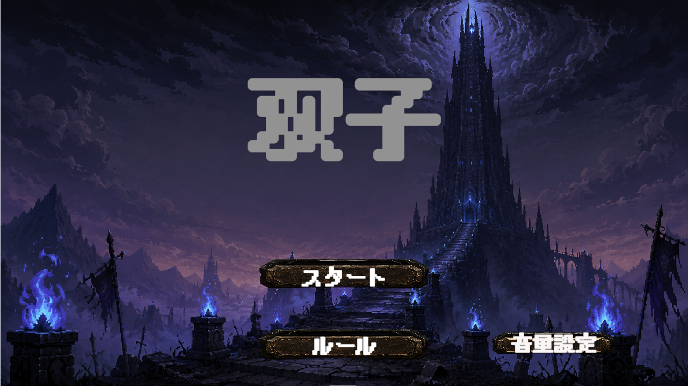
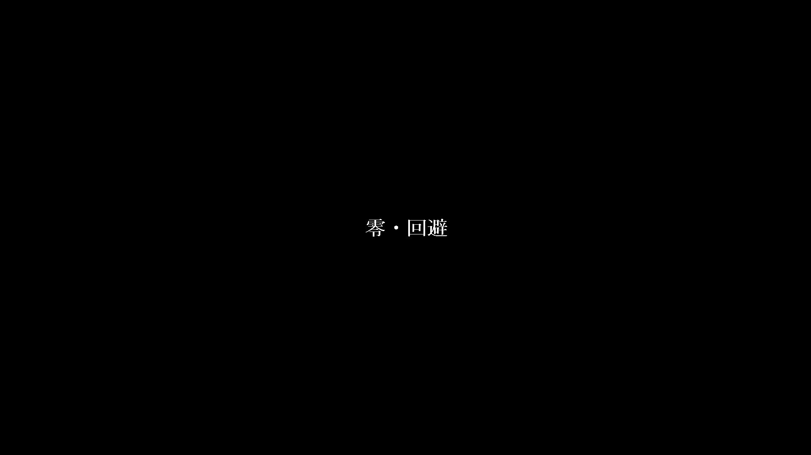

C:\> works
作ったゲーム
ダウンロード不要。リンクを開けばその場で遊べます。
> 実行可能なファイルが5件あります。
双子

このゲームは、「リンク」を使い、バフや攻撃をリンクさせることで相手を倒していくというのがゲームのコアです。 敵と敵同士をつなげて1ターンで攻撃を二回分当てたり、味方同士でバフリンクをつなげて、二人ともバフを上げたりができます。 リンクを使う戦略性が楽しいゲームになっています
零・回避

初めてC++で作った2DSTGです。 通常の2DSTGに加えて、当たる瞬間に必殺技を出すと即時発射とスコア増加というリスクとリターンを考えた。 遊びを入れています。 配布は行っていません。